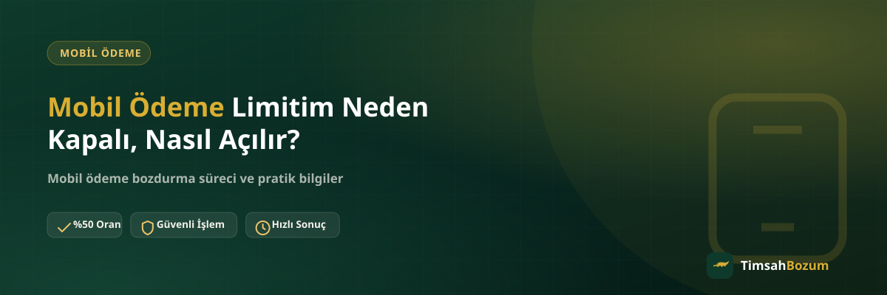

Bazı kullanıcılar operatör uygulamasını açtığında mobil ödeme bölümünün boş göründüğünü ya da "kapalı" ifadesiyle karşılaştığını fark ediyor. Bu durum genelde bir arıza değil, operatörün hat bazında uyguladığı bir kısıtlamadır. Bu yazıda limitin neden kapalı görünebileceğini, nasıl yeniden açıldığını ve bu durumun elindeki bakiyeyi bozdurma sürecini nasıl etkilediğini anlatıyoruz.
Mobil Ödeme Limiti Neden Kapalı Görünür?
Mobil ödeme, operatörün sana tanıdığı bir tür harcama kredisidir; bu yüzden her hatta otomatik olarak açık gelmeyebilir. Limitin kapalı görünmesinin arkasında genelde hattın geçmişiyle, ödeme düzeniyle veya kullanım şekliyle ilgili bir neden vardır. Aşağıdaki başlıklarda bu nedenleri tek tek ele alıyoruz.
Yeni Açılan Hatlarda Mobil Ödeme Neden Kapalı Olur?
Yeni bir hat aldığında operatör, henüz bir ödeme geçmişin olmadığı için mobil ödeme özelliğini başlangıçta kapalı tutabilir ya da çok düşük bir limitle açabilir. Bu, riski sınırlamak için uygulanan standart bir yaklaşımdır; hattın kötü niyetli kullanılmadığından emin olmak operatörün önceliğidir. Zamanla hat aktif kaldıkça ve düzenli kullanıldıkça bu durum genelde kendiliğinden değişir.
Faturamı Geç Ödediğim İçin mi Kapandı?
Evet, geciken veya ödenmemiş bir fatura mobil ödeme özelliğinin geçici olarak kısıtlanmasına yol açabilen en sık nedenlerden biri. Operatör, tahsil edemediği bir borç varken yeni bir harcamaya izin vermek istemez; bu mantıkla mobil ödeme borcun kapatılmasına kadar durdurulabilir. Böyle bir durumda önce güncel borç durumunu operatör uygulamandan kontrol etmek en doğru ilk adımdır.
Olağan Dışı Kullanım Nedeniyle Kısıtlama Nasıl Olur?
Kısa sürede art arda yapılan yüksek tutarlı işlemler, operatörün otomatik güvenlik sistemleri tarafından "olağan dışı" olarak değerlendirilebilir. Bu durumda operatör, hesabı incelemek amacıyla mobil ödemeyi geçici olarak kapatabilir. Bu bir ceza değil, dolandırıcılık veya kötüye kullanım ihtimaline karşı devreye giren otomatik bir önlemdir; süreç genelde operatörün kendi incelemesiyle çözülür.
Faturasız (Prepaid) Hatlarda Durum Farklı mı?
Mobil ödeme, tanımı gereği harcamanın faturaya yansımasıyla çalışan bir yöntemdir. Bu yüzden faturasız hatlarda özellik ya hiç tanımlı değildir ya da çok sınırlı bir şekilde çalışır. Faturasız bir hatta mobil ödeme bölümünün sürekli kapalı görünmesi bir arıza değil, hat türünün doğal bir sonucudur; hattını faturalıya geçirmek dışında bu durumu değiştirecek bir işlem yoktur.
Hat Devri Yapılan Numaralarda Limit Neden Sıfırlanır?
Bir hat başka birine devredildiğinde ya da yeni bir kimlik üzerine geçtiğinde, operatör önceki kullanıcıya ait geçmişi yeni sahibi için geçerli saymaz. Bu durumda mobil ödeme, sanki hat yeni açılmış gibi düşük limitle veya kapalı olarak yeniden başlayabilir. Devraldığın bir hatta mobil ödeme kapalıysa bu, hattın geçmişiyle değil senin kendi kullanım geçmişinin henüz oluşmamasıyla ilgilidir.
Mobil Ödeme Limitim Kapalıyken Elimdeki Bakiyeyi Bozdurabilir miyim?
Evet. Limitin yeni harcamaya kapatılmış olması, hattında daha önce oluşmuş ve halen duran mobil ödeme bakiyesini etkilemez. Bozum işleminde konu edilen şey yeni harcama yapabilme hakkın değil, o an hattında görünen bakiyedir. Güncel bakiyeni gösteren bir ekran görüntüsüyle WhatsApp hattımıza yazman, limit kapalı olsa bile işlemi başlatman için yeterli. Bu konudaki genel süreç için mobil ödeme bozdurma sayfamıza bakabilirsin.
Mobil Ödeme Limitimi Nasıl Açarım?
Limiti açma yetkisi tamamen operatöre ait olduğu için ilk adım her zaman operatörün kendi kanallarına başvurmaktır. Aşağıdaki sıralama çoğu durumda izlenebilecek genel bir yol haritasıdır.
- Önce nedeni anla: operatör uygulamasında mobil ödeme bölümüne bakarak bir uyarı veya bilgilendirme mesajı olup olmadığını kontrol et.
- Varsa borcu kapat: geciken bir fatura kısıtlamaya neden oluyorsa, borcu ödemek genelde ilk ve gerekli adımdır.
- Müşteri hizmetleriyle görüş: uygulamada net bir açıklama yoksa operatörün müşteri hizmetleri hattı durumu netleştirebilir.
- Güvenlik incelemesi varsa bekle: olağan dışı kullanım nedeniyle kısıtlama gelmişse, operatörün incelemesi tamamlanana kadar beklemek dışında yapılabilecek fazla bir şey olmaz.
TimsahBozum bir bozdurma hizmeti olduğu için bu süreçte doğrudan bir rolü yoktur; limit açma tamamen operatörün kendi sistemine bağlı bir işlemdir. Operatörüne göre detaylı bilgi için Vodafone, Türk Telekom ve Turkcell sayfalarına göz atabilirsin.
Ne Kadar Sürede Açılır?
Net bir süre vermek yanıltıcı olur, çünkü açılma süresi kapanma nedenine ve operatöre göre değişir. Bir fatura borcundan kaynaklanan kısıtlama borç ödendiğinde nispeten hızlı çözülebilirken, güvenlik incelemesi gerektiren bir durum daha uzun sürebilir. Güncel durumu takip etmenin en sağlıklı yolu operatör uygulaması veya müşteri hizmetleridir.
Limit Açıldıktan Sonra Bozum İşlemi Değişir mi?
Hayır, limitin açık ya da kapalı olması bozum sürecinin işleyişini değiştirmez. Bozum işleminde her zaman o anki güncel bakiye esas alınır. Limitin yeniden açılması sadece yeni harcama yapabilmeni sağlar; elindeki bakiyeyi bozdurmak için limitin açık olması bir ön koşul değildir.
Birden Fazla Hattım Varsa Her Birini Ayrı mı Takip Etmeliyim?
Evet. Mobil ödeme limiti ve kısıtlama durumu hat bazında değerlendirilir, yani aynı isme kayıtlı birden fazla hattın olsa bile her hattın geçmişi ve mevcut durumu birbirinden bağımsızdır. Bir hattında mobil ödeme kapalıyken diğer hattında sorunsuz açık olabilir. Bu yüzden hangi hatta işlem yapmak istiyorsan güncel durumunu o hattın kendi uygulama girişinden kontrol etmen gerekir; bir hat için aldığın sonucu diğerine genellemek yanıltıcı olabilir.
İlgili Yazılar
- Mobil Ödeme Limiti Nasıl Artırılır?
- Mobil Ödeme Limit Bozum Nedir? Limitin Tamamı Bozdurulur mu?
- Mobil Ödeme Bakiyesi Nedir, Nasıl Oluşur?
Limitin kapalı olup olmadığından bağımsız olarak, hattındaki mevcut mobil ödeme bakiyeni değerlendirmek istersen güncel bakiye ekran görüntünle WhatsApp hattımıza yazman yeterli.